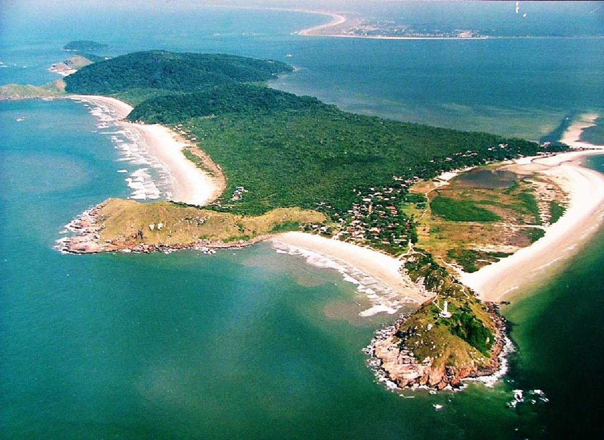
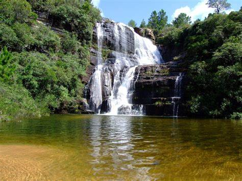
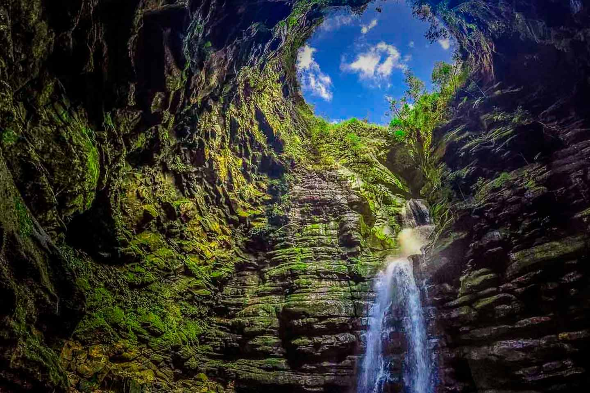
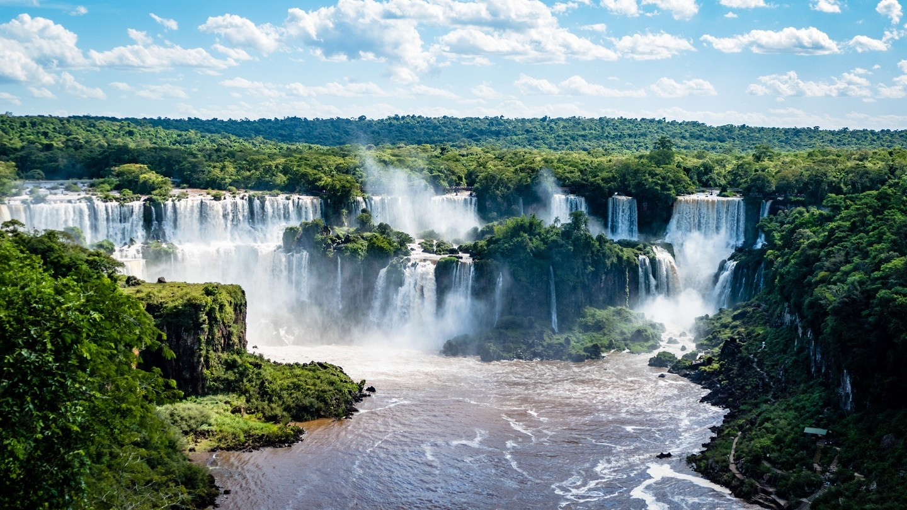

Ilha do Mel
A Ilha do Mel fica situada na Baía de Paranagua, a ilha atualmente é um dos poucos locais que preserva a Mata Atlântica no Paraná. A ilha é muito famosa por susas praias, fauna e flora, fazendo ela se tornar um dos pontos turísticos mais procurados no Paraná.
- Valor:Não informado
Sengés
O Sengés é uma cidade ao noroeste do Paraná, muito conhecida principalmente por seus Rios; Cascatas; Lagos; quedas d'águas. Vales; Grutas e Florestas fazem suas vistas ficarem ainda mais perfeitas. Um lugar incrivel tanto para pessoas que gostam de relaxar e de avanturas.
- Valor: Não informado
Parque Buraco do Padre
O parque Buraco do Padre é um dos maiores tesouros escondidos do Paraná. Situada em Ponta grossa. O parque é bem famoso por sua cachoeira com buraco em baixo, formando uma piscina natural. Além disso, a varias trilhas para caminhada, areas de piquinique, mirantes e uma rica fauna e flora.
- Valor: A visita ao Parque custa apartir de R$54,00 por pessoa.
Parque Nac. de Foz do Iguaçu
O Parque Nacional do Foz do Iguaçu é um dos destinos mais procurados de todo o Paraná. Localizado no Oeste do Paraná, junto na fronteira com a Argentina e Paraguai, é um dos locais mais visitados do Brasil. O maior destaque do parque são as famosas Cataratas do Iguaçu. O parque contam diversas trilhas , passeios de barcos e atividades radicais, alem de rica em flora e fauna.
- Valor: Não informado
Contatos
Qualquer duvida entre em contato.
- Email: EcoVenture@gmail.com
- Whatsapp: +55 (44) 12345-6789